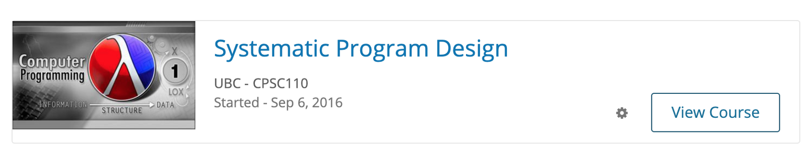

Vancouver, BC
In September 2017, I taught one semester of CPSC 110 (Computation, Programs, and Programming) at the University of British Columbia . CPSC 110 is the required course for all computer science students and for a number of other majors including mathematics and cognitive systems. Along with these people, many others took the course as an elective or out of curiosity, and so I met a wide range of majors and skill levels while TA-ing this course.
CPSC 110 was designed to put all incoming students on a level playing field for the rest of their Computer Science courses. As such, the course was taught in Racket - a functional programming language used as a platform for programming language design, computer science education, research, and more. The course covered a range of topics including:
As an Undergraduate Teaching Assistant, I directed weekly office hours and labs where students were to complete a problem set by the end of the 3 hour period. I also worked on the grading team that marked both the weekly assignments and exams throughout the semester.